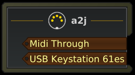
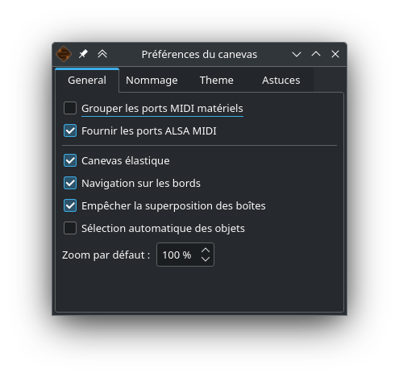
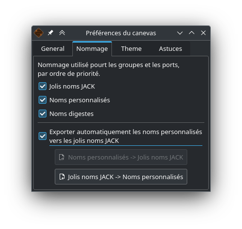
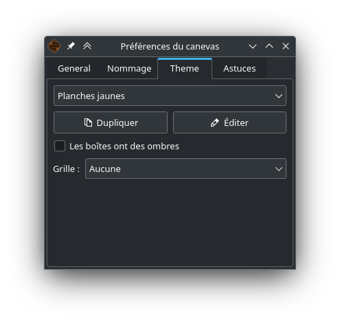
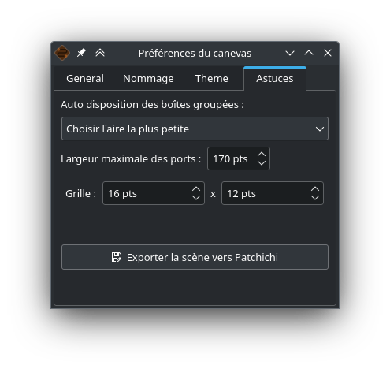
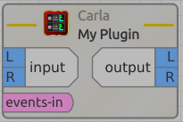
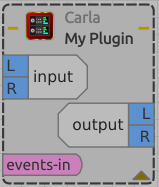

Vue d’ensemble

Voilà à quoi peut ressembler votre baie de brassage. Ici il y a 7 boîtes :
-
une boîte system comprenant vos ports correspondant aux entrées matérielles
-
une boîte system comprenant vos ports correspondant aux sorties matérielles (enceintes, casque)
-
une boîte a2j comprenant vos ports correspondant aux entrées MIDI
-
une boîte a2j comprenant vos ports correspondant aux sorties MIDI
-
une boîte PulseAudio JACK Source
-
une boîte PulseAudio JACK Sink
-
une boîte Guitarix
Ici les ponts A2J et pulse2jack sont lancés. Vous observez que 4 de ces boîtes sont entourées d’une décoration (2 system et 2 a2j), ce sont les boîtes qui contiennent les ports matériels (votre interface audio, votre piano USB, n’importe quel contrôleur…).
Certains ports audios sont regroupés en sous-groupes, que l’on appellera portgroups. Ces portgroups sont pour la plupart des paires stéréo détectées automatiquement par le nom des ports. C’est le cas ici pour :
-
system:capture 1/2
-
system:playback 1/2
-
PulseAudio JACK Source:front L/R
-
PulseAudio JACK Sink:front L/R
-
Guitarix:out 0/1
Ces portgroups facilitent les connexions et permettent une meilleur lisibilité générale.
Les lignes incurvées bleues correspondent aux connexions audios. Vous pouvez observer que :
-
les ports audio d’entrées matérielles sont connectés à PulseAudio JACK Source
-
les ports de PulseAudio JACK Sink sont connectés aux sorties matérielles
-
seul le premier port de system est connecté à l’entrée (in 0) du logiciel Guitarix
-
les ports audios de Guitarix sont connectés aux sorties matérielles
Faire et défaire une connexion
Vous pouvez établir une connexion entre 2 ports pourvu qu’ils remplissent les conditions suivantes :
-
les ports sont du même type (on ne peut pas connecter un port audio à un port MIDI)
-
l’un est un port d’entrée, l’autre est un port de sortie
Méthode Intuitive
Pour connecter ou déconnecter deux ports, cliquez sur un port sans relâcher le bouton de la souris, glissez le curseur jusqu’au port désiré puis relachez le bouton de la souris.
Méthode Alternative
Faites un clic droit sur un port, celà affichera un menu déroulant, choisissez Connecter puis le port désiré. Cliquez ailleurs pour faire disparaître ce menu. L’avantage de cette méthode est qu’elle permet de connecter rapidement un port à plusieurs autres, le menu restant affiché pendant les connexions.
Le menu déroulant
Un clic droit n’importe où sur la baie de brassage permet d’en afficher le menu. Ce menu est également présent dans le menu de RaySession (menu Baie de brassage). Il vous permettra de :
-
basculer la baie de brassage en plein écran
-
chercher une boîte par son nom
-
Filtrer les ports: n’afficher que les ports AUDIO, MIDI, CV, ALSA ou tous
-
restaurer des boîtes cachées (par vous même)
-
demander un auto-arrangement de la vue, selon la chaîne du signal ou en deux colonnes face à face
-
régler le niveau de zoom
-
rafraîchir le canevas: redemander à JACK la liste des ports existants et leurs connexions
-
Préférences du canevas: afficher une fenêtre d’options
Tous les changements dans cette fenêtre prennent effet immédiatement. Survolez les cases pour afficher les infobulles.
Raccourcis à connaître
-
Un double clic n’importe où permet de basculer la baie de brassage en plein écran.
-
Ctrl+Molette de la souris permet de zoomer/dézoomer.
-
Alt+Molette de la souris permet déplacer la vue horizontallement.
-
Le bouton de la molette permet de déplacer la vue
-
Ctrl+F permet de chercher une boîte par son nom
-
Alt+[0-9] permet de changer de vue, par exemple Alt+2 permet de passer à la vue 2, la créant si besoin.
Connexions en rafale
Il est possible de connecter un port ou un portgroup à différents ports assez rapidement. Il suffit de terminer ses connexions par un clic droit. Une video sera bien plus explicite.
Ici nous voulons connecter les multiple sorties d’Hydrogen à des tranches de Jack-Mixer. Dans la video les ronds bleus apparaissent avec un clic droit.
Passer les connexions d’un port à un autre
Il est parfois moins fastidieux de passer des connexions d’un port à un autre plutôt que de tout défaire pour tout refaire. Pour ce faire, partez du port qui contient les connexions et faites comme si vous vouliez faire une connexion, mais allez vers le port vers lequel vous souhaitez basculer les connexions.
-
Celà ne fonctionne que si le port de destination ne contient aucune connexion
-
Celà fonctionne de port à port ou de portgroup à portgroup mais pas de port à portgroup
Dans cette video nous avons un cas assez complexe où la source est branchée dans 3 Band Splitter. Les basses et les aigües (Output 1 et Output 5) sont envoyés directement dans EQ6Q Mono tandis que les medium (Output 3) passent d’abord par la distortion GxTubeScreamer. Nous voulons insérer la reverb Dragonfly Room Reverb avant l’égualisation EQ6Q Mono.
Notez qu’avec la connexion par clic droit et le passage de connexions d’un port à l’autre, il est très rapide d’intégrer un nouveau greffon dans une chaîne, comme ici où nous branchons Plujain Ramp Live entre Dragonfly Room Reverb et EQ6Q Mono.
Ports spéciaux
Les ports A2J (ou Midi-Bridge)

Les ports MIDI fournis par le pont A2J (Alsa To Jack) (ou Midi-Bridge avec Pipewire) présentent un trou à leur extrêmité pour les reconnaître. Leur véritable nom est un nom à ralonges, mais c’est à peu près la seule chose qui diffère avec les autres ports MIDI.
Les ports de tension de contrôle (ports CV)

les ports de tension de contrôle, appellés communément ports CV (Control Voltage) ont le même fonctionnement que les ports audio classiques, cependant, ils sont faits pour piloter un ou plusieurs paramètres avec une précision bien plus importante que les ports MIDI. Comme leur flux n’est pas fait pour être écouté, il n’est pas possible de connecter simplement un port CV de sortie vers une entrée audio classique, celà pourrait endommager votre casque, vos enceintes, et peut-être même bien vos oreilles.
Si vous souhaitez quand même le faire, faites un clic droit sur l’un des ports, puis Connecter, puis le menu DANGEREUX.
Vous ne pourrez pas dire que vous n’étiez pas prévenu, et il est quasiment impossible de faire ça par erreur.
En revanche, connecter un port de sortie audio classique vers un port CV d’entrée est tout à fait possible, ça ne pose aucun problème.
Éditer un thème
Vous avez la possibilité d’éditer les couleurs d’un thème. C’est plutôt facile et rapide à faire.
Pour plus d’informations, consultez l’aide sur l’édition des themes.
Préférences du canevas
Vous pouvez accéder à cette fenêtre en faisant un clic droit n’importe où sur la scène, puis Préférences du canevas.
Onglet General

-
grouper les ports MIDI matériels: Les ports midi matériels sont ceux fournis par le pont A2J (ALSA to JACK) ou par Pipewire MidiBridge. Le nom réel de ces ports commence soit par
a2j:soit parMidiBridge:, en les groupant vous gardez tous ces ports dans la même boîte (nomméea2jouMidiBridge). En les dégroupant il y aura une boîte par client ALSA (ALSA est le module du noyau Linux qui communique avec votre matériel MIDI). -
Fournir les ports ALSA MIDI: Certains programmes audio peuvent communiquer directement avec les ports ALSA (créés par le noyau) plutôt qu’avec les ports JACK MIDI (créés par A2J ou par PipeWire). Ces ports transmettent leur données sans y appliquer la latence de JACK (ça peut être un avantage ou un inconvénient). Dans la majorité des cas, disposer de ces ports n’est pas nécessaire, les débutants n’en auront pas besoin.
-
Canevas élastique: Toujours redimensionner la scène à son contenu minimum. Celà permet d’optimiser la vue après chaque ajout, suppression, changement ou déplacement de boîte. Si vous décochez cette case, la scène grandira sans cesse et vous pouvez chercher vos boîtes au milieu du désert.
-
Navigation sur les bords: Lors de la connexion, du déplacement ou de la sélection des boîtes, la vue se déplace quand le curseur est prêt du bord. Nul besoin d’utiliser la molette de la souris, d’appuyer sur Maj ou de déplacer les barres de défilement. Ça n’a strictement aucun effet quand la scène est entièrement visible dans la vue.
-
Empêcher la superposition des boîtes: Quand cette option est active, les boîtes sont automatiquement déplacées quand une autre boîte est placée dessus. Décochez cette case si vous aimez chercher des boîtes cachées derrière les autres ou si celà vous permet d’éviter un bug (que vous avez rapporté bien entendu).
-
Sélection automatique des objets: Sélectionne les boîtes, les ports et les portgroups au survol de la souris. Peut permettre d’identifier plus vite certaines connexions.
-
Zoom par défaut: La taille des éléments est une question de goût et d’aisance visuelle, aussi elle dépend beaucoup de la taille et de la résolution de votre écran. Un clic droit sur le curseur de zoom vous permettra de revenir à ce zoom par défaut.
Onglet Nommage

Les boîtes et les ports peuvent être nommés selon plusieurs informations:
-
le nom réel fourni par JACK ou PipeWire
-
le nom digeste que HoustonPatchbay peut lui donner selon le nom du client, en éliminant le superflu du nom réel pour améliorer la lisibilité. Par exemple, on reconnait par leur forme un port d’entrée d’un port de sortie, nul besoin qu’il contienne
inputououtput -
le nom personnalisé, c’est le nom qui va être utilisé lorsque vous renommez un élément. Sous RaySession, il peuvent être différents selon la session en cours.
-
le joli nom JACK, qui est une métadonnée affectée au client ou au port dans JACK (ou PipeWire). Cette métadonnée peut être écrite par RaySession, Patchance, le client JACK concerné ou même tout autre programme qui utilise JACK.
Si vous souhaitez voir tous les noms réels des clients et des ports, il faudra décocher les trois cases jolis noms JACK, Noms personnalisés et Noms digestes. Sinon, vous pouvez obtenir cette information par clic droit sur un client ou un port, puis Informations.
-
Exporter automatiquement les noms personnalisées vers les jolis noms JACK: Quand cette option est activée, tous les noms personnalisés (que l’on crée en renommant les boîtes et les ports) seront transmis dans les métadonnées de JACK et deviendront accessibles aux programmes qui utilisent JACK. Par exemple, si vous renommez vos ports d’entrées matérielles, ces entrées seront renommées dans Ardour, ce qui peut être agréable et pratique.
Cette option n’est pas enclenchée par défaut parce que le programme pourrait rentrer en conflit avec une autre instance du même programme ou avec tout autre programme qui aurait un comportement similaire (toutes les applications peuvent écrire dans les métadonnées de JACK). Aussi, elle ne fonctionnera pas si une autre instance de Patchance ou de RaySession l’utilise déjà sur le même serveur JACK.
Même quand cette option est activée, un joli nom peut être fourni par un autre programme et non enregistré parmi les noms personnalisés. Normalement ce n’est pas gênant, il est fort probable que ce programme réécrive le joli nom quand vous le rouvrez. Si vous n’aimez pas ce joli-nom, renommez l’élément dans la baie de brassage et votre baie de brassage devrait pouvoir le renommer après disparition/réapparition. Techniquement, HoustonPatchbay écrit la métadonnée au moins 200ms après l’apparition du port, c’est généralement dans ce laps de temps que le programme qui enregistre le port JACK fournit la métadonnée de joli nom (qui pourra être écrasée).
-
Noms personnalisés → jolis noms JACK: Exporter les noms personnalisés de boîtes et de ports vers les métadonnées de joli nom JACK de clients et de ports. C’est option est grisée si l’export automatique est enclenché, ou s’il n’y a pas de noms personnalisés
-
jolis noms JACK → Noms personnalisés: Importer les jolis noms JACK dans les noms personnalisés. Cette option est grisée s’il n’y a pas de jolis noms JACK qui ne soit pas identique au nom personnalisé.
Onglet Theme

-
Boîte de choix du theme: choisissez le thème qui vous plaît. La présence de l’icône utilisateur signifie que l’utilisateur a les droits de modification sur l’emplacement du dossier du thème.
-
Dupliquer: Copier le thème en cours pour pouvoir l’éditer, en lui donnant un autre nom. Le thème sera dupliqué dans le dossier caché
~/.local/share/{PROGRAM}/HoustonPatchbay/themes, ou {PROGRAM} peut êtreraysessionoupatchance. -
Éditer: Ouvrir le fichier du theme
theme.confdans votre éditeur de texte, le bouton est grisé si l’utilisateur n’a pas les droits de modification sur le fichier en question. -
Les boîtes ont des ombres : Simple option de rendu esthétique, consomme un peu de resources.
-
Grille: Permet d’afficher une grille dans le fond de la scène. La taille des lignes et des colonnes dépend de la taille de la grille définie dans l’onglet Astuces et des tailles minimales de grille écrites dans le fichier de thème.
Onglet Astuces

Cet onglet aurait pût s’appeler Divers, ou même Fourre-tout, mais il embrasse son époque managériale qui rend l’ensemble du langage plus positif. Avec un nom comme Astuces, vous n’avez pas l’impression de perdre votre temps ici, alors qu’en réalité…
-
Auto disposition des boîtes groupées : Cette option ne concerne que les boîtes qui contiennent des entrées ET des sorties. Il peut y avoir deux façons de disposer ces boîtes:
-
soit en disposition large:

-
soit en disposition haute:

Il s’agit ici d’un réglage de la disposition automatique (par défaut). Certains et certaines préfèrent largement les boîtes larges, mais il est des cas où le gain de place est énorme en boîte haute, par exemple quand il n’y a qu’un port d’entrée et dix ports de sortie. La boîte a choix multiple est en fait un dosage:
-
Choisir l’aire la plus petite: les boîtes auront autant de chances d’être hautes que larges.
-
Préférer les boîtes larges: Il faut que la disposition haute soit sensiblement avantageuse pour être choisie
-
Quasiment que des boîtes larges: Les boîtes auront toutes une disposition large, sauf si la disposition haute permet un gain de place absolument flagrant
-
Que des boîtes larges: Pour celles et ceux qui ne supportent pas la disposition haute
-
-
Largeur maximale des ports: Certains programmes écrivent des noms de ports trèèèèès longs, ces noms seront donc tronqués s’ils excèdent le nombre de points défini pour éviter une largeur de boîte trop importante.
-
grille: définir en points la largeur et la hauteur de la grille. Plus ces valeurs sont grandes, plus les boîtes seront faciles à aligner verticalement et horizontalement, et plus les boîtes seront un peu plus grandes que nécessaire.
-
Exporter la scène vers Patchichi : Enregistre le contenu de la baie de brassage au format json lisible par le logiciel Patchichi. Celà permet de transmettre au développeur la situation en cas de bogue. Il est également possible (mais pas si évident), de travailler le positionnement des boîtes dans Patchichi quand on n’a pas accès au matériel, rares sont celles et ceux qui auront ce besoin.